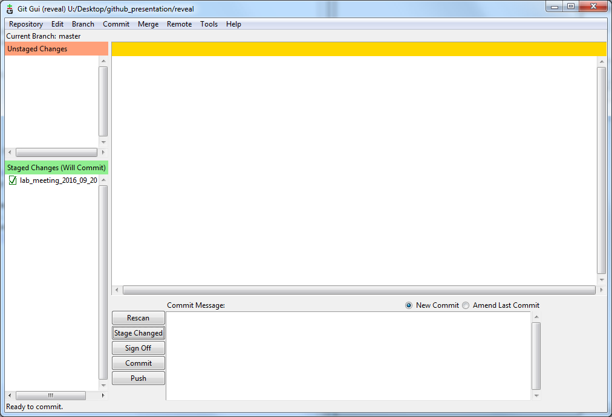
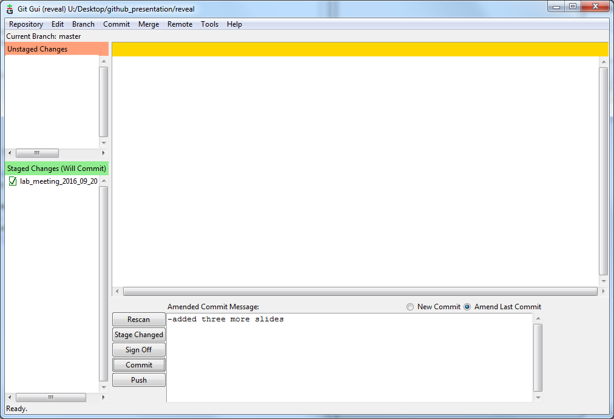
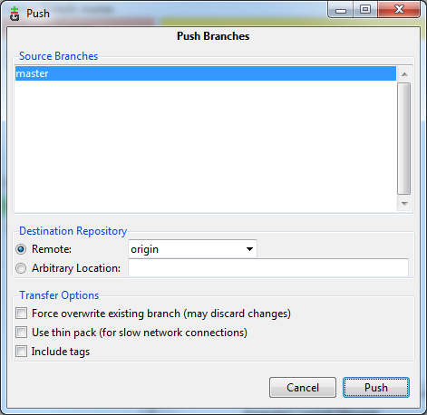

Using Git for research
... and maybe a conversation on whether and how it can help our research
Woldorff Lab MeetingKen Roberts09/20/2016
Outline
- What is Git
- What does a git workflow look like?
- What is Github?
- Discussion on how useful this might be
What is Git?
- Git is a "source code management" program
- stores current and previous versions of source code
- allows multiple people working on a project to stay "in sync"
- Git is distributed.
- there are multiple copies of the code in different places
- no one copy is the "official" copy (except by convention)
- Git is a command-line tool that now has a GUI.
Old workflow
- Ken: Charlie, do you have a script that does X?
- Charlie: No
- Ken: Khoi, do you have a script that does X?
- Khoi: Sure, but it is kind of rough, and only for my project. Hold on.
- Khoi: (zips up file, emails it)
- Ken: (unzips file, tries to run it, doesn't work, fix bug, try to run, repeat)
- Eventually, Khoi and Ken's files are similar, but different, and don't work together.
- In many cases, Khoi and Ken recreate same feature in mutually incompatible ways.
New workflow (ideally)
- Ken: (looks in Github for set of scripts)
- Ken: (forks repository)
- Ken: (gets set of scripts that work from the beginning)
- Ken: (adds feature to script, uploads with a couple clicks)
- Khoi: (automatically gets Ken's feature)
- Ken: (also automatically gets Khoi's, Charlie's and anyone elses' features)
Lingo
- Repo: repository, like a project
- Branch: copy of a repository, a repo can have more than one branch
- Fork: to create a new branch
- Commit: a package of changes to a repository
- ideally, encompasses one feature
- works, not half-complete, broken, or changes other behavior unexpectedly
- Pull: to download new changes from a remote branch
- Push: to upload new changes to a remote branch
Stage changes
Choose files you want to commit in "staging" area

Commit
label with informative comment

Push changes
Push to a remote repository

Potential benefits
- In a shared project you will get changes made by others
- There is a complete history of every commit to the project
- You can see the state of the code at any point in time
- If a bug is found, you can trace it back to it's origin
- Allows each person to have a "personal" view of code, as well as shared view
- Plus... all benefits of GitHub, GitLab, BitBucket